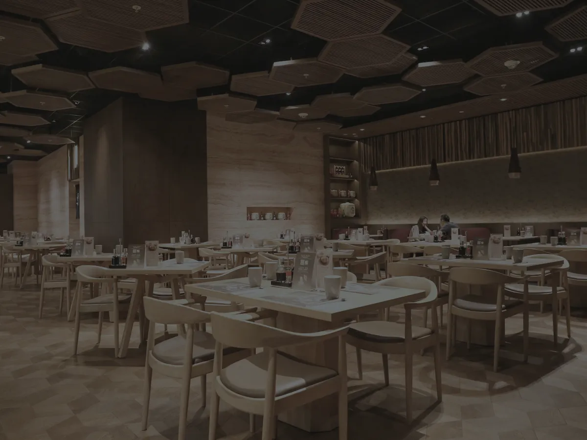
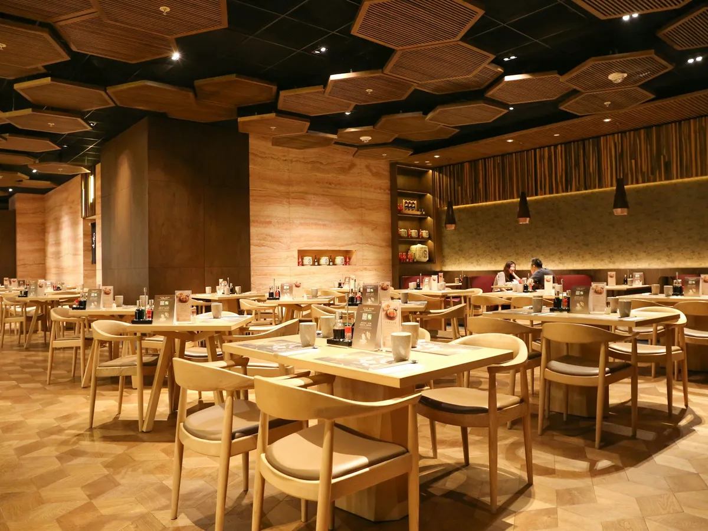

Fotoğraftan ışık analizi
Mevcut ışığın renk sıcaklığı ve seviyesi tahmin edilir; yetersiz noktalar işaretlenir.
Yapay zekâ destekli aydınlatma asistanı
Mekânınızın fotoğrafını çekin, ölçüleri girin. Aydix mevcut ışığı analiz eder; doğru lux, Kelvin, CRI, armatür ve adaptörü hesaplayıp önerir — önerinin mekânınızda nasıl görüneceğini de gösterir.
Sonuç · Kafe · 42 m²
Önerilen ışık
Hesap
%25 güvenlik payı + gerilim düşümü sınırı
Nasıl görünecek?
Nasıl çalışır
Mekândan en fazla 3 fotoğraf. Yapay zekâ mevcut ışığın rengini ve seviyesini tahmin eder — sonuç aralık olarak gösterilir, siz düzeltebilirsiniz.
Mekân tipi, metrekare, tavan yüksekliği, iç/dış koşul, istediğiniz atmosfer ve bütçe. Kafe, mağaza, ofis, ev… 13 mekân tipi hazır.
Hedef lux, Kelvin, CRI ve IP; ürün, metraj, adaptör, dimmer ve devre sayısı. Hepsi gerekçesiyle, tek ekranda.
Yeni
Önerilen aydınlatmayı karar vermeden görün. Aydix, kendi fotoğrafınızı önerilen ışık rengi ve armatürlerle yeniden çizer; öncesi ile sonrası arasında geçiş yapıp görseli parmaklarınızla yakınlaştırarak inceleyebilirsiniz.
Görsel temsilidir; rakamlar hesap motorundan gelir. Oluşturulan görseller hesabınızda saklanır, analizi sonra açtığınızda da görünür.


Önce Sonra · 3.000KÖzellikler
Mevcut ışığın renk sıcaklığı ve seviyesi tahmin edilir; yetersiz noktalar işaretlenir.
Güç, akım, devre ve adaptör saf formüllerle hesaplanır: 18 m × 14,4 W/m = 259,2 W · 10,8 A. Yapay zekâ sayı uydurmaz.
5V, 12V ya da 24V seçimi; gerilim düşümüne göre besleme noktaları ve %25 güvenlik paylı adaptör.
“Spot istemiyorum”, “sadece sarkıt olsun” deyin; ihtiyaç sabit kalır, ürün seçimi değişir.
Kalemler, metrajlar ve toplam tutarla müşterinize hazır teklif — kendi işletme logonuzla.
Hesap açmadan analiz yapın. Görsel önizleme için ücretsiz hesap yeter; geçmişiniz hesabınıza taşınır.
Kimler için
Planlar
Önerilen
Aylık ya da yıllık. Kurumsal plan da mevcut.
Güncel fiyatlar uygulamada, Google Play ve App Store fiyatıyla gösterilir. Abonelik dönem sonunda otomatik yenilenir; mağaza hesabınızdan istediğiniz zaman iptal edebilirsiniz.


SSS
Analiz için yüklediğiniz fotoğraflar saklanmaz; yalnız analiz anında işlenir. Tek istisna “Nasıl görünecek?”: bu özelliği kullanırsanız fotoğrafın küçültülmüş kopyası ve üretilen görsel, sonra yeniden görebilmeniz için hesabınızda saklanır. Geçmişte en fazla 10 analiz tutulur; eskileri görselleriyle birlikte otomatik silinir.
Hayır. Uygulamayı açar açmaz misafir olarak analiz yapabilirsiniz. “Nasıl görünecek?” görseli ve abonelik için ücretsiz bir hesap gerekir; e-posta doğrulaması beklemeden hemen açılır ve misafir geçmişiniz hesabınıza taşınır.
Güç, akım, devre ve adaptör gibi tüm sayısal sonuçlar test edilmiş formüllerle hesaplanır; yapay zekâ yalnız fotoğrafı yorumlar ve gerekçe metni yazar. Fotoğraftan ışık tahmini her zaman bir aralık olarak gösterilir. Kesin uygulama öncesi bir uzmana danışmanızı öneririz.
Google Play ya da App Store hesabınızın abonelik ayarlarından, dönem bitmeden en az 24 saat önce yenilemeyi kapatabilirsiniz.
Uygulamada Profil → Hesabımı sil adımıyla ya da e-postayla. Ayrıntılar Hesap Silme sayfasında.